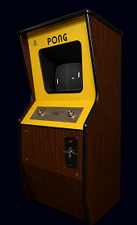
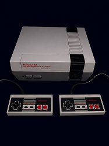
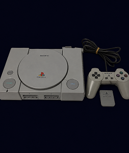
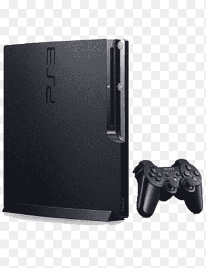
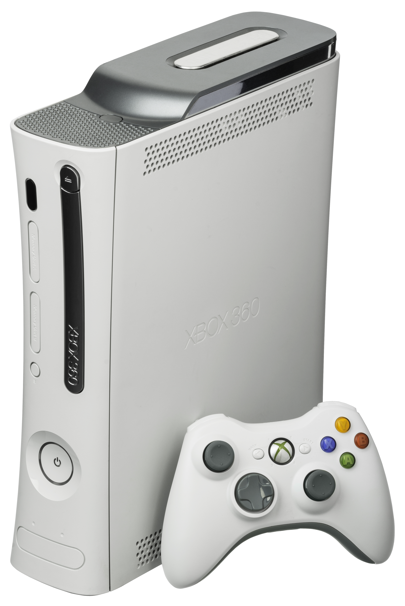
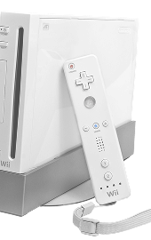

O Atari Pong marcou o início da era dos videogames comerciais, levando a diversão eletrônica para milhões de lares.

O Nintendo Entertainment System revitalizou a indústria dos games após a crise de 1983, trazendo clássicos como Super Mario Bros.

A Sony entrou no mercado com o PlayStation, revolucionando os gráficos 3D e expandindo o público gamer.

Tornou-se o console mais vendido da história, tocando DVDs e consolidando os jogos em 3D como padrão da indústria.

A Microsoft consolidou sua presença no mercado com o Xbox Live, popularizando o multiplayer online em consoles.

O Wii trouxe controles de movimento e tornou os videogames acessíveis para toda a família.

A nova geração apostou em jogos digitais, streaming e redes sociais integradas, mirando a era dos serviços online.

O console híbrido uniu portátil e doméstico em um só aparelho, redefinindo como e onde as pessoas jogam.

SSDs ultrarrápidos, ray tracing e resolução 4K elevaram os gráficos e os tempos de carregamento a um novo patamar.

A nova geração híbrida da Nintendo chega com mais potência e telas maiores, seguindo a fórmula que consagrou o console original.